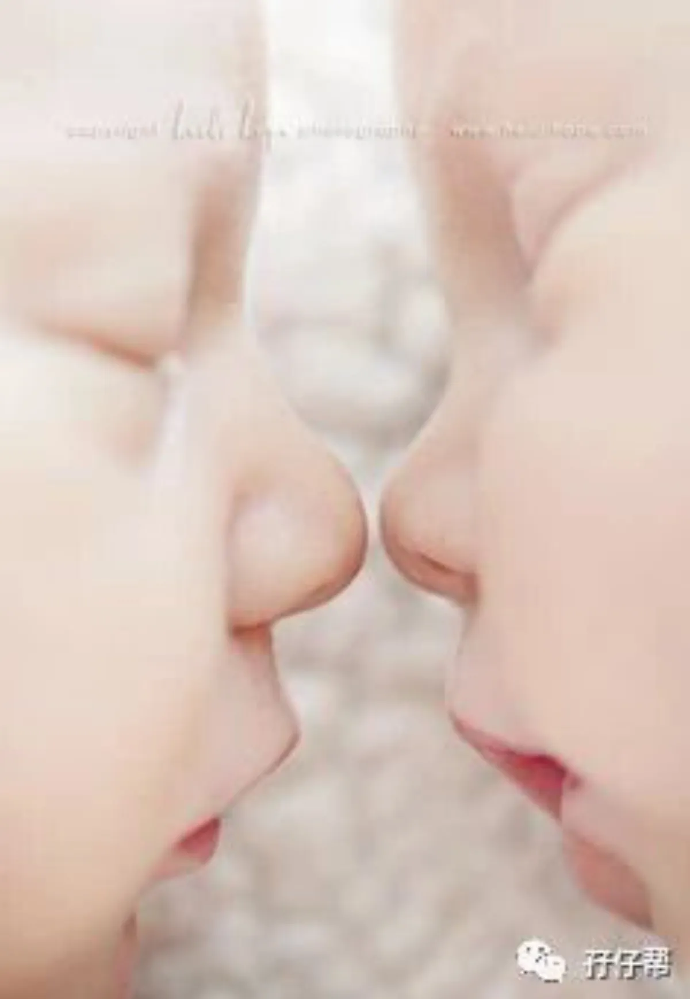
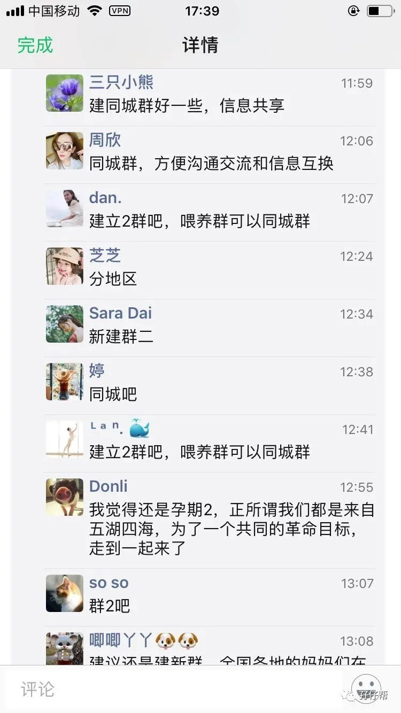
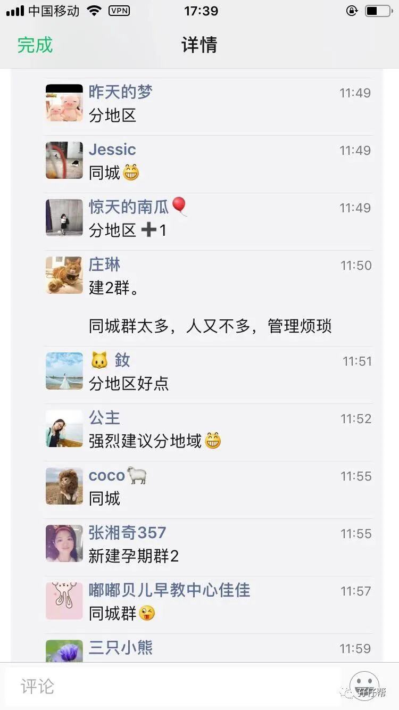

各位关注孖仔帮的小伙伴们：
你们好，我是孖仔帮帮主圆圈妈。
孖仔帮，旨意分享双胞胎孕育经验帮助双胞胎家庭有经验可循，有组织可靠（先喊下口号…哈…）
感谢大家对双胞胎育儿公众号孖仔帮一直以来的陪伴和支持，我们的双胞胎育儿军团才得以不断壮大。
目前孖仔帮有5个双胞胎微信社群！
孕期群
（仅限怀孕中的双胎孕妈）
讨论主题：八卦双胎孕期所有槽点，如备孕，孕吐，产检（TTTs,生长受限，血糖高，贫血，子痫，宫颈管短，胎盘低置等），饮食，睡觉，囤货….
喂养群
（仅限已生娃的双胎宝妈，有部分孕后期的孕妈会提前入群取经）
讨论主题：控诉双胎育儿所有惨状，如生娃经历，早产儿护理及成长检测，挤奶，喂奶，追奶，辅食添加，疾病护理，生长发育，好物推荐，育儿神器分享等有关两宝宝的吃喝拉撒睡…
闲置群
（仅限双胞胎家庭，宝爸宝妈均可）
讨论主题：处理二手闲置物品，正规网购平台的母婴用品拼团...
爸爸群
（仅限双胎奶爸）
讨论主题：吐槽双胎奶爸的所有心声…..（涉及话题众多！不列举了哈！）
教育群
（仅限双胞胎家庭，宝爸宝妈，爷爷奶奶，外公外婆均可，建议两孩子年龄1岁以上）
讨论主题：分享双胞胎孩子们的非常教育，如亲子阅读，英语启蒙，家庭教育经验交流，如双胞胎孩子经常抢玩具，打架，争宠，吃醋，宫斗…
（此群不够活跃，群主有待改进）
随着群成员的不断加入，现有的5个群已经无法满足到双胞胎家庭的各种孕育需求。
尤其是二手闲置群，一些大件物品的闲置处理，受地域的限制难以转手处理，体验度不高…
根据最近群成员的反馈，大家对双胞胎的同城交流群呼声很高。
诚然，同城群的确有很多优势。
若你有以下问题，基本上同城群都可以帮你解决。
处理大件二手闲置物，如婴儿车，婴儿车，邮费太贵了，同城自取多好啊！
产检医院不知道哪家好，建档需要带什么资料？
双胎并发症多，不小心摊上了，找哪个医生比较好。
医院的VIP陪护房，有必要吗？靠谱吗？价格怎样？
想预订月子中心，选择综合征，不知道选哪家？
月嫂！好重要！尤其是有双胎经验的月嫂，急需前雇主推荐。
两宝宝生病了，哪个医生擅长婴幼儿疾病治疗？
新生儿如何入户，需要带哪些资料？如何办理社保报销事宜？
各地的生育险报销比例不一，双胎的生育险报销有特殊规定吗？求过来人经验！
宝宝打疫苗问题，要带什么资料？到处都缺苗，求有疫苗的社康江湖救急？
适合双胞胎孩子的亲子活动？想知道周末有哪些好玩推荐。
宝宝没人带，哪个早教机构可以“买一送一”？
马上要入园了，选幼儿园头好大啊！学费乘以2，哪个幼儿园第二份可以半价？
能不能约在一起上幼儿园，让老师们集体懵逼？
双胞胎爸爸妈妈的线下育儿交流活动，轻松约起来！
最压轴的是：让双胞胎孩子们一起玩，培养感情，私订娃娃亲，双胞胎嫁/娶双胞胎，666哦！
近日我在朋友圈发起了一个意见征集，
孕期【2】 VS 同城群
截取部分反馈如下：
看来同城群真的备受青睐，机智如你！
同城群的确有很多便利，但若是群成员太少，便失去存在意义，而且群多管理维护难度大。
因此，我发起了这个投票统计:孖仔帮•投票|你最期待哪个省份/城市启动双胞胎同城交流群
投票请下拉到文末，欢迎大家踊跃参与！
投票选项只列举了北上广深四个一线大城市，如有其它城市是你所期待的，请在留言区跟帖。
我会根据点赞人数决定是否要启动该城市的同城群。
只要满100人，咱就同城见哈！
插播一个广告|深圳站的双胞胎爸爸妈妈，快点站我这边，咱把第一个同城群启动起来！
加油点赞吧！
与同城群同时进行的还有孕期群【02】。
孕期群【01】于2019年的“315打假日”突破500人，考虑到爬楼看信息好痛苦，经过一番探讨，近日会启动孕期群【02】（孖仔帮•双胞胎孕期群2）。
此群不分地区！不分地区！不分地区！
欢迎全国各地，港澳台及海内外的双胞胎准妈妈入群找组织倒苦水。
已经在孕期群【01】的孕妈，如有兴趣分享孕期经验，结实更多同道中人，可私我发孕期群2的群聊邀请哈。
尤其欢迎资深双胎孕妈入群2传道受业解惑！
为防止闲杂人等入群扰乱群秩序，暂不开放群二维码，谢绝拉人进群。
如需入群，请加圆圈妈微信sgguy-com，由圆圈妈发群聊邀请。
请注明：双胎？孕妈？奶爸？预产期？单绒双羊？单绒单羊，双绒双羊？
关于群规，我只有一个要求，未经许可，切勿在群内发与双胎孕育无关的信息，链接，广告，比如：
带有二维码的图片
与育儿无关的链接，如拼团，投票，朋友圈点赞等
淘宝、支付宝红包等消息
向群友暗示或明示买东西可以找自己
直接推荐微信名片、公众号、小程序、手机号码、微信号等到群里
一经发现，不设提醒，直接抱出群，欢迎大家监督举报，谢谢！
我相信，各位爸爸妈妈入群来都是为了了解学习关于双胎孕育的知识，希望我们都能不忘初衷，自觉遵守群规！
温馨提示：群昵称格式，请参考：昵称+宝宝出生日期+年龄性别+地区。
举例：圆圈妈201507双男深圳
最后祝愿我们的双胞胎孩子们平安，健康，快乐成长！
孖仔帮•投票
你最期待哪个省份/城市启动双胞胎同城交流群
-END-
重磅互动
#你希望写什么育儿经验干货？#
评论区聊一聊
随便提，万一下篇就写了呢？
关于这个号
谢谢关注！
我是圆圈妈
85后，全职妈妈
家有孖仔两枚，圆圈&圈圈
双胞胎育儿公众号：孖仔帮
ID:twinsbang
旨意分享双胞胎育儿经验帮助双胞胎家庭
有经验可循
有组织可靠
希望我的经验对您有所启发
期待与您一起共享双胞胎育儿经
孖仔帮目前有5个双胞胎微信社群
孕期群，喂养群，闲置群
爸爸群，教育群
如需入交流群
添加微信号sgguy-com
或扫描下方二维码⬇⬇
申请入群
入群暗号：双胎宝妈/宝爸，孕期/已生
往期回顾
105：同卵双胞胎的天敌--双胞胎输血综合征
106：官宣：双绒双羊，单绒双羊，单绒单羊傻傻分不清？一篇消除你所有疑问
215：双胎子宫日记系列|（下）你看不看？双胞胎妈妈直播剖腹产全过程
306：真人示范！双胞胎妈妈高难度喂母乳技巧
312：为出生就进NICU的双胞胎新生儿，我必须告诉你这5个通关秘籍
407：嘿！双胞胎孩子的亲子阅读攻略，要来一份吗（1--2岁阶段）
605：看过这份最简单的双胞胎宝宝用品囤货清单，其他的都是将就
608：听说...你在找双胞胎育儿神器，这事儿我熟！
723：双胎妈妈，为什么我不建议你这样坐月子...
⬇⬇长按下方二维码，关注孖仔帮
回复文章编号数字即可阅读
更多养育双胞胎知识，尽在双胞胎育儿网站
请猛戳 "阅读原文"
或长按下方二维码直达⬇⬇
点击“阅读全文”，直达双胞胎育儿网站
阅读原文


